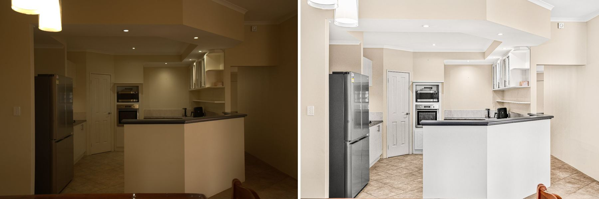
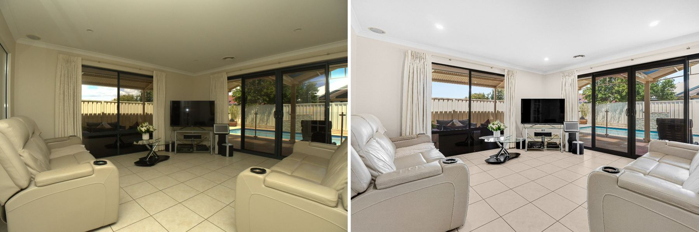
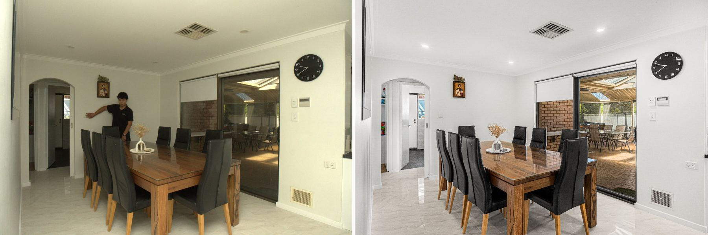

3 job(s) · 3 item(s) · Baker Production QC
Add a flash frame to every room
None of the 7 room brackets checked (kitchen, living, dining, bedroom, bathroom, front) had a flash frame – EXIF shows the flash never fired. Under the warm downlights the raws are dark and orange, so the editor has to build the whole look from ambient. Fire one flash frame at the end of each bracket, aimed at the ceiling, about 1 stop under clipping.

Turn the flash power up
Flash frames are 2.6–3.6 stops under clipping (living DSC07652, dining DSC07629) – about 1.5–2.5 stops too dark, so the flash barely lifts the room over the warm ambient light. Several other rooms had no flash frame at all. Target: brightest whites about 1 stop below clipping.

Step out of the flash frame
In the dining flash frame (DSC07071) the photographer is standing in shot by the doorway. The editor removed it, but it costs editing time and risks a smudge – fire the flash from behind the camera or out of the line of sight. That frame is also 2.7 stops under clipping; aim for about 1 stop.
